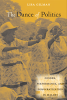

How gender and class intersect in Malawi through women's roles as political praise performers
How gender and class intersect in Malawi through women's roles as political praise performers


 How gender and class intersect in Malawi through women's roles as political praise performers
How gender and class intersect in Malawi through women's roles as political praise performers

|  |
The Dance of PoliticsGender, Performance, and Democratization in MalawiLisa Gilmanpaper EAN: 978-1-59213-986-6 (ISBN: 1-59213-986-8) |
"The Dance of Politics is well written and analytically provocative. Gilman advances the scholarship on intersections between performance, gender, and nation building in postcolonial Africa and makes an important contribution in this regard. The situating of Malawi political dance within a broader understanding of political power, imbalances in economic power, and the gendering of power are the strengths of this book. The Dance of Politics is an excellent example of a diachronic, historical documentation of an African cultural form."
—Daniel Reed, Associate Professor of Folklore and Ethnomusicology at Indiana University
Election campaigns, political events, and national celebration days in Malawi usually feature groups of women who dance and perform songs of praise for politicians and political parties. These lively performances help to attract and energize throngs of prospective voters. However, as Lisa Gilman explains, “praise performing” is one of the only ways that poor women are allowed to participate in a male-dominated political system.
Although political performances by women are not unique to Malawi, the case is complicated by the fact that until 1994 women in this country were required to perform on behalf of the long-reigning political party—the Malawi Congress Party—and its self-declared “President for Life,” Dr. Hastings Kamuzu Banda. This is the first book to examine the present-day situation, where issues of gender, economics and politics collide in surprising ways. Along with its solid grounding in the relevant literature, The Dance of Politics draws strength from Gilman’s firsthand observations and her interviews with a range of participants in the political process, from dancers to politicians to human rights activists.
Excerpt available at www.temple.edu/tempress
"In this carefully documented book, Lisa Gilman demonstrates how the embodied experiences of women’s political dancing have served to both reinscribe and challenge women’s subordinate status in Malawi. Through a nuanced analysis of the transformations of women's praise performing, Gilman provides an interdisciplinary ethnography that serves as an excellent model of intersectional research. She examines how power and agency operate on, with, and through women’s performative bodies and minds at the intersections of gender, politics, and economics. A must read for anyone interested in women, gender, and power in Africa."
—Jennifer Leigh Disney, Associate Professor of Political Science at Winthrop University and author of Women’s Activism and Feminist Agency in Mozambique and Nicaragua (Temple)
"Gilman offers a rich, detailed examination of women's dancing as a political tool in the burgeoning democratic state of Malawi.... Written with clarity, this volume stretches folklore, performance and feminist studies methodologies to consider 'the central role that the political sphere has come to play in providing contexts for performance.' Summing Up: Recommended."
—CHOICE
“Gilman’s insightful book…. is very solidly rooted in first-hand observation, a piece of detailed reportage where events and discussions are related with the authority of extensive empirical witness over more than a decade. Direct quotation from interviews is extensive and the narrative is firmly grounded in the grassroots. At times it has a diary-like aspect….The reader is placed alongside the author, close to the raw data…. [A] worthy addition.”
—Africa
"[A] fascinating book about women’s political dancing in Malawi....[Gilman] raises some important methodological issues.... This book has much to offer to its reader. Gilman’s fieldwork data is well-documented and solidly embedded in the framework of gender theories. I can wholeheartedly recommend it."
—the world of music
"Lisa Gilman’s intimate account of female dancing at political rallies in Malawi offers a deeply nuanced analysis of the relationship between gender, performance, and political democracy. Teeming with ethnographic richness, her work contributes to a growing literature that explores the (musical and dance) performance of politics and nationalism in postcolonial Africa.... Gilman demonstrates a remarkable grasp of the subtleties and complexities surrounding women’s political dancing in Malawi, illustrating the intricate webs of power at work. Readers will appreciate not only her lucid prose and ethnographic detail, but also her ability to place her research in its appropriate historical context and connect it to larger issues in African studies. This book should appeal to scholars, but should equally be read by members of NGOs, human rights groups, and politicians who wish to further their knowledge of gender inequities and democracy in Africa."
—Journal of Folklore Research (website)
"Gilman’s book is a skillful, well-documented exploration of how present-day praise performances provide a powerful avenue for poor Malawian women to participate politically—while simultaneously perpetuating their political marginalization. Her interdisciplinary analysis is an effective conversation between existing literature and the perspectives of the participants."
—Western Folklore
"The Dance of Politics is a valuable contribution to the scholarly literature on gender, performance, and socio-political transformation in Africa.... This book provides a deep exploration of music and dance in the context of a specific African nation during a key moment in its history....The Dance of Politics offers insightful theoretical discussions and concrete examples/experiences that are of great interest for scholars from various disciplines focused on performance, gender, and politics in Africa."
—Journal of American Folklore
Acknowledgments
1. Introduction: Gender, Power, and Performance
2. Dance and Nationalism in the Independence Movement
3. Dance and Social Control During Banda’s Presidency
4. Dance, the Transition to Multipartyism, and Patronage
5. Power and Performance in Political Rallies
6. Why Do Women Dance?
7. Gendering Democracy
8. Gender at the Intersection of Politics, Democratization, and Tradition
Appendix A: Brief Timeline of Malawi’s Recent Po liti cal History
Appendix B: People Interviewed
Appendix C: Political Functions Attended and Referenced
Appendix D: Associated Multimedia Websites
References
Index
 | Lisa Gilman is Associate Professor in the Department of English and Folklore Program at the University of Oregon. |
Music and Dance
African Studies
Women's Studies
African Soundscapes, edited by Gregory Barz.
African music has been a topic of considerable scholarly and general interest. The books in this new interdisciplinary series will highlight contemporary African music in its cultural contexts and the contributions of African expressive culture to global music traditions. The series will include works by scholars based in Africa.
© 2015 Temple University. All Rights Reserved. This page: http://www.temple.edu/tempress/titles/2018_reg.html.